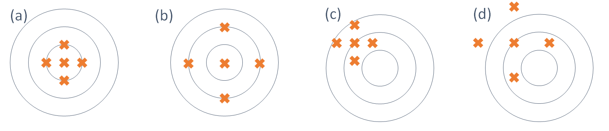

Capítulo 3 Conceitos Básicos
No estudo da inferência estatística, o objetivo principal é obter informações sobre uma população a partir das informações de uma amostra e aqui vamos precisar de definições mais formais de população e amostra. Para facilitar a compreensão destes conceitos, apresentamos o exemplo abaixo a título de ilustração
Em um estudo antropométrico em nível nacional, uma amostra de 5000 adultos é selecionada dentre os adultos brasileiros e uma das variáveis de estudo é a altura.
Neste exemplo, a população é o conjunto de todos os brasileiros adultos. No entanto, o interesse (um deles, pelo menos) está na altura dos brasileiros. Assim, nesse estudo, a cada sujeito da população associamos um número correspondente a sua altura. Se determinado sujeito é sorteado para entrar na amostra, o que nos interessa é esse número, ou seja, sua altura.
Como sabemos, essa é a definição de variável aleatória: uma função que associa a cada ponto do espaço amostral um número real. Dessa forma, a nossa população pode ser representada pela variável aleatória \(X\) = ``altura do adulto brasileiro”. Como essa é uma v.a. contínua, a ela está associada uma função de densidade de probabilidade \(f\) e da literatura, sabemos que é razoável supor que essa densidade seja a densidade normal. Assim, nossa população, nesse caso, é representada por uma v.a. \(X\sim N(\mu; \sigma^2)\). Conhecendo os valores de \(\mu\) e \(\sigma\) teremos informações completas sobre a nossa população.
Uma forma de obtermos os valores de \(\mu\) e \(\sigma\) é medindo as alturas de todos os brasileiros adultos. Mas esse seria um procedimento caro e demorado. Uma solução, então, é retirar uma amostra (subonjunto) da população e estudar essa amostra. Suponhamos que essa amostra seja retirada com reposição e que os sorteios sejam feitos de forma independente, isto é, o resultado de cada extração não altera o resultado das demais extrações. Ao sortearmos o primeiro elemento, estamos realizando um experimento que dá origem a v.a. \(X_1=\) altura do primeiro elemento; o segundo elemento dá origem a v.a. \(X_2=\) ``altura do segundo elemento” e assim por diante. Como as extrações são feitas com reposição, todas as v.a. \(X_1, X_2, \ldots\) têm a mesma distribuição, que reflete a distribuição da altura de todos os brasileiros adultos. Para uma amostra específica, temos os valores observados \(x_1, x_2, \ldots\) dessas variáveis aleatórias.
3.1 População
A inferência estatística trata do problema de se obter informação sobre uma população a partir de uma amostra. Embora a população real possa ser constituída de pessoas, empresas, animais etc., as pesquisas estatísticas buscam informações sobre determinadas características dos sujeitos, características essas que podem ser representadas por números. Sendo assim, a cada sujeito da população está associado um número, o que nos permite apresentar a seguinte definição.
Os métodos de inferência nos permitirão obter estimativas dos parâmetros (característica de interesse) de tal variável aleatória, que pode ser contínua ou discreta.
3.2 Amostra
Embora existam vários métodos de seleção de amostras, nosso foco é a amostragem aleatória simples. Segundo tal método, toda amostra de mesmo tamanho \(n\) tem igual chance (probabilidade) de ser sorteada. É possível extrair amostras aleatórias simples com e sem reposição. No entanto, para populações grandes - ou infinitas - extrações com e sem reposição não levam a resultados muito diferentes. Assim, no estudo da Inferência Estatística, estaremos lidando sempre com amostragem aleatória simples com reposição. Este método de seleção atribui a cada elemento da população a mesma probabilidade de ser selecionado e esta probabilidade se mantém constante ao longo do processo de seleção da amostra (se as extrações fossem sem reposição isso não aconteceria). No restante desse curso omitiremos a expressão ``com reposição”, ou seja, o termo amostragem (ou amostra) aleatória simples sempre se referirá a amostragem com reposição. Por simplicidade, muitas vezes abreviaremos o termo amostra aleatória simples por aas.
Uma forma de se obter uma amostra aleatória simples é escrever os números ou nomes dos elementos da população em cartões iguais, colocar estes cartões em uma urna misturando-os bem e fazer os sorteios necessários, tendo o cuidado de colocar cada cartão sorteado na urna antes do próximo sorteio. Na prática, em geral são usados programas de computador, uma vez que as populações tendem a ser muito grandes.
Agora vamos formalizar o processo de seleção de uma amostra aleatória simples, de forma a relacioná-lo com os problemas de inferência estatística que iremos estudar. Seja uma população representada por uma variável aleatória \(X\). De tal população será sorteada uma amostra aleatória simples com reposição de tamanho \(n\). Como visto nos exemplos anteriores, cada sorteio dá origem a uma variável aleatória \(X_i\) e, como os sorteios são com reposição, todas essas variáveis têm a mesma distribuição de \(X\). Isso nos leva a seguinte definição.
É interessante notar a convenção usual: o valor observado de uma v.a. \(X\) é representado pela letra minúscula correspondente. Assim, depois do sorteio de uma aas de tamanho \(n\), temos valores observados \(x_1, x_2, \ldots, x_n\) das respectivas variáveis aleatórias.
3.3 Estatísticas e Parâmetros
Obtida uma aas, é possível calcular diversas características desta amostra, como, por exemplo, a média, a mediana, a variância, etc. Qualquer uma destas características é uma função de \(X_1, X_2, \ldots, X_n\) e, portanto, o seu valor depende da amostra sorteada. Sendo assim, cada uma dessas características ou funções é também uma v.a.. Por exemplo, a média amostral é a v.a. definida por \[\bar X = \frac{X_1+X_2+\ldots+X_n}{n}.\]
Temos, então, a seguinte definição:
As estatísticas amostrais que estaremos considerando neste curso são:
- média amostral: \(\bar X = \frac{1}{n}\sum_{i=1}^n X_i\)
- variância amostral: \(S^2=\frac{1}{n-1}\sum_{i=1}^n (X_i-\bar X)^2\)
Para uma amostra específica, o valor obido para o estimador será denominado estimativa e, em geral, serão representadas por letras minúsculas. Por exemplo, temos as seguintes notações correspondentes a média amostral e a variância: \(\bar x\) e \(s^2\).
Outras estatísticas possíveis são o mínimo amostral, o máximo amostral, a amplitude amostral, etc.
De forma análoga, temos as características de interesse da população. No entanto, para diferenciar entre as duas situações (população e amostra), atribuimos nomes diferentes.
Assim, se a população é representada pela v.a. \(X\), alguns parâmetros são a esperança \(E(X)\) e a variância \(V(X)\). Com relação as características mais usuais, vamos usar a seguinte notação:
| Característica | Parâmetro (população) | Estatística (amostra) |
|---|---|---|
| Média | \(\mu\) | \(\bar X\) |
| Variância | \(\sigma^2\) | \(S^2\) |
| Número de elementos | \(N\) | \(n\) |
3.4 Distribuições Amostrais
Nos problemas de inferência, estamos interessados em estimar um parâmetro \(\theta\) da população (por exemplo, a média populacional) através de uma aas \(X_1, X_2, \ldots, X_n\). Para isso, usamos uma estatística \(T\) (por exemplo, a média amostral) e, com base no valor obtido para \(T\) a partir de uma particular amostra, iremos tomar as decisões que o problema exige. Já foi dito que \(T\) é uma v.a., uma vez que depende da amostra sorteada; amostras diferentes fornecerão diferentes valores para \(T\).
Consideremos o seguinte exemplo, onde nossa população é o conjunto \(\{1,3,6,8\}\), isto é, este é o conjunto dos valores da característica de interesse da população em estudo. Assim, para esta população, ou seja, para essa v.a. \(X\) temos \(E(X)=\) 4.5 e \(V(X)=\) 7.25.
Suponha que dessa população iremos extrair uma aas de tamanho 2 e a estatística que iremos calcular é a média amostral. Algumas possibilidades de amostra são \(\{1,1\}\), \(\{1,3\}\), \(\{6,8\}\), para as quais os valores da média amostral são \(1\), \(2\) e \(7\), respectivamente. Podemos ver, então, que há uma variabilidade nos valores da estatística e, assim, seria interessante que conhecêssemos tal variabilidade. Conhecendo tal variabilidade, temos condições de saber ``quão infelizes” podemos ser no sorteio da amostra. No exemplo acima, as amostras \(\{1,1\}\) e \(\{8,8\}\) são as que têm média amostral mais afastada da verdadeira média populacional. Se esses valores tiverem chance muito mais alta do que os valores mais próximos de \(E(X)\), podemos ter sérios problemas.
Para conhecer o comportamento (distribuição) da média amostral, teríamos que conhecer todos os possíveis valores de \(X\), o que equivaleria a conhecer todas as possíveis amostras de tamanho 2 de tal população. Nesse exemplo, como só temos 4 elementos na população, a obtenção de todas as aas de tamanho 2 não é difícil. No entanto, para um número um pouco maior dele elementos, ou quando não conhecemos todo o espaço amostral, essa tarefa se torna complexa.
Em outras palavras, uma distribuição amostral é a distribuição de probabilidades de uma medida estatística baseada em uma amostra aleatória. Ao retirar uma amostra aleatória de uma população estaremos considerando cada valor da amostra como um valor de uma variável aleatória cuja distribuição de probabilidade é a mesma da população no instante da retirada desse elemento para a amostra. Em consequência do fato de os valores de amostra serem aleatórios, decorre que qualquer quantidade calculada em função dos elementos da amostra também será uma variável aleatória.
Podemos ver que a obtenção da distribuição amostral de qualquer estatística \(T\) é um processo tão ou mais complicado do que trabalhar com a população inteira. Na prática, o que temos é uma única amostra e com esse resultado é que temos que tomar as decisões pertinentes ao problema em estudo. Esta tomada de decisão, no entanto, será facilitada se conhecermos resultados teóricos sobre o comportamento da distribuição amostral.
3.5 Propriedades dos Estimadores
Vimos anteriormente que, dada uma população, existem muitas e muitas aas de tamanho \(n\) que podem ser sorteadas. Cada uma dessas amostras resulta em um valor diferente da estatística de interesse (\(\bar X\) e \(S^2\), por exemplo). O que esses resultados estão mostrando é como esses diferentes valores se comportam em relação ao verdadeiro (mas desconhecido) valor do parâmetro.
Considere a Figura abaixo, onde o alvo representa o valor do parâmetro e os ``tiros”, indicados pelos símbolo x, representam os diferentes valores amostrais da estatística de interesse.

Nas partes (a) e (b) da figura, os tiros estão em torno do alvo, enquanto nas partes (c) e (d) isso não acontece. Comparando as partes (a) e (b), podemos ver que na parte (a) os tiros estão mais concentrados em torno do alvo, isto é, têm menor dispersão. Isso reflete uma pontaria mais certeira do atirador em (a). Analogamente, nas partes (c) e (d), embora ambos os atiradores estejam com a mira deslocada, os tiros do atirador (c) estão mais concentrados em torno de um alvo; o deslocamento poderia até ser resultado de um desalinhamento da arma. Já o atirador (d), além de estar com o alvo deslocado, ele tem os tiros mais espalhados, o que reflete menor precisão.
Traduzindo esta situação para o contexto de estimadores e suas propriedades, temos o seguinte: nas partes (a) e (b), temos dois estimadores que fornecem estimativas centradas em torno do verdadeiro valor do parâmetro, ou seja, as diferentes amostras fornecem valores distribuídos em torno do verdadeiro valor do parâmetro. A diferença é que em (b) esses valores estão mais dispersos e, assim, temos mais chance de obter uma amostra ``infeliz”, ou seja, uma amostra que forneça um resultado muito afastado do valor do parâmetro. Essas duas propriedades estão associadas a esperança e a variância do estimador, que são medidas de centro e dispersão, respectivamente. Nas partes (c) e (d), as estimativas estão centradas em torno de um valor diferente do parâmetro de interesse e na parte (d), a dispersão é maior.
Temos, assim, ilustrados os seguintes conceitos:
Essa esperança é calculada ao longo de todas as possíveis amostras, ou seja, é a esperança da distribuição amostral de \(T\). Nas partes (a) e (b) da Figura os estimadores são não-viesados e nas partes (c) e (d), os estimadores são viesados.
Com relação aos estimadores \(bar X\), \(S^2\) e \(\hat \sigma^2\), veremos formalmente que os dois primeiros são não-viesados para estimar a média e a variância populacionais, respectivamente, enquanto \(\hat \sigma^2\) é viesado para estimar a variância populacional. Essa é a razão para se usar \(S^2\), e não \(\hat \sigma^2\).
Na Figura, o estimador da parte (a) é mais eficiente que o estimador da parte (b). Uma outra propriedade dos estimadores está relacionada a idéia bastante intuitiva de que a medida que se aumenta o tamanho da amostra, mais perto devemos ficar do verdadeiro valor do parâmetro.
- \(\lim_{n\to\infty} E(\hat\theta)=\theta\)
- \(\lim_{n\to\infty} V(\hat\theta)=0\)